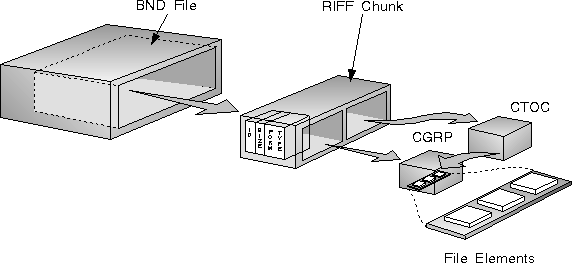

Files based upon the compound file structure contain the following two RIFF chunks at the "top level" of a RIFF file-(as subchunks of the RIFF chunk):
The CGRP chunk contains all the compound file elements, concatenated together. An element may be a RIFF file, but it may also be a non-RIFF file, or an arbitrary RIFF chunk, or arbitrary binary data. The definition of the form that contains the CGRP chunk may specify exactly what the elements of the CGRP chunk may be. The CTOC chunk indexes the CGRP chunk, which contains the actual multimedia data elements. Each entry contains the name of the element and other information about the element, including the offset of the element within the CGRP chunk. All the CTOC entries of a table are of the same length and can be specified when the file is created.
The CTOC chunk may appear either before or after the CGRP chunk. Generally, the CTOC chunk is placed at the front of the file to reduce the seek and read times required to access it. See the following figure.
